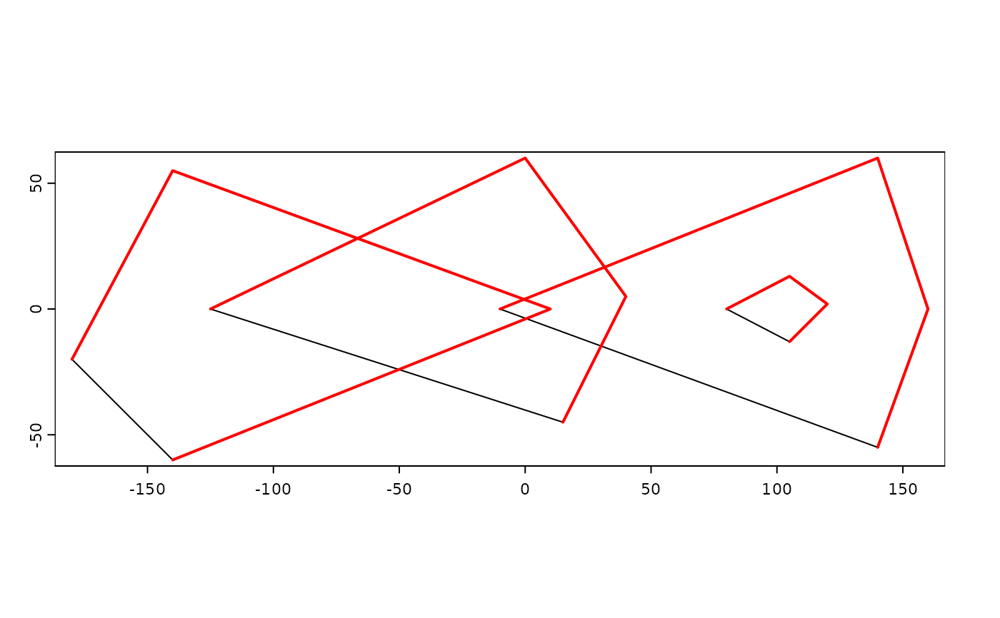

Create SpatVector objects
vect.RdMethods to create a SpatVector from a filename or other R object.
A filename can be for a shapefile or any spatial file format.
You can use a data.frame to make a SpatVector of points; or a "geom" matrix to make a SpatVector of any supported geometry (see examples and geom).
You can supply a list of SpatVectors to append them into a single SpatVector.
SpatVectors can also be created from "Well Known Text", and from spatial vector data objects defined in the sf or sp packages.
Usage
# S4 method for class 'character'
vect(x, layer="", query="", extent=NULL, filter=NULL,
crs="", proxy=FALSE, what="", opts=NULL)
# S4 method for class 'matrix'
vect(x, type="points", atts=NULL, crs="")
# S4 method for class 'data.frame'
vect(x, geom=c("lon", "lat"), crs="", keepgeom=FALSE)
# S4 method for class 'list'
vect(x, type="points", crs="")
# S4 method for class 'SpatExtent'
vect(x, crs="")
# S4 method for class 'SpatVectorCollection'
vect(x)
# S4 method for class 'sf'
vect(x)Arguments
- x
character. A filename; or a "Well Known Text" string; SpatExtent, data.frame (to make a SpatVector of points); a "geom" matrix to make a SpatVector of any supported geometry (see examples and
geom); a spatial vector data object defined in thesforsppackages; or a list with matrices with coordinates- layer
character. layer name to select a layer from a file (database) with multiple layers
- query
character. A query to subset the dataset in the OGR-SQL dialect
- extent
Spat* object. The extent of the object is used as a spatial filter to select the geometries to read. Ignored if
filteris notNULL- filter
SpatVector. Used as a spatial filter to select geometries to read (the convex hull is used for lines or points). It is guaranteed that all features that overlap with the extent of filter will be returned. It can happen that additional geometries are returned
- type
character. Geometry type. Must be "points", "lines", or "polygons"
- atts
data.frame with the attributes. The number of rows must match the number of geometrical elements
- crs
character. The coordinate reference system in one of the following formats: WKT/WKT2, <authority>:<code>, or PROJ-string notation (see
crs)- proxy
logical. If
TRUEa SpatVectorProxy is returned- what
character indicating what to read. Either
""for geometries and attributes, or"geoms"to only read the geometries,"attributes"to only read the attributes (that are returned as a data.frame)- opts
character. GDAL dataset open options
- geom
character. The field name(s) with the geometry data. Either two names for x and y coordinates of points, or a single name for a single column with WKT geometries
- keepgeom
logical. If
TRUEthe geom variable(s) is (are) also included in the attributes
Examples
### SpatVector from file
f <- system.file("ex/lux.shp", package="terra")
f
#> [1] "/Users/runner/work/_temp/Library/terra/ex/lux.shp"
v <- vect(f)
v
#> class : SpatVector
#> geometry : polygons
#> dimensions : 12, 6 (geometries, attributes)
#> extent : 5.74414, 6.528252, 49.44781, 50.18162 (xmin, xmax, ymin, ymax)
#> source : lux.shp
#> coord. ref. : lon/lat WGS 84 (EPSG:4326)
#> names : ID_1 NAME_1 ID_2 NAME_2 AREA POP
#> type : <num> <chr> <num> <chr> <num> <int>
#> values : 1 Diekirch 1 Clervaux 312 18081
#> 1 Diekirch 2 Diekirch 218 32543
#> 1 Diekirch 3 Redange 259 18664
## subsetting (large) files
## with attribute query
v <- vect(f, query="SELECT NAME_1, NAME_2, ID_2 FROM lux WHERE ID_2 < 4")
## with an extent
e <- ext(5.9, 6.3, 49.9, 50)
v <- vect(f, extent=e)
## with polygons
p <- as.polygons(e)
v <- vect(f, filter=p)
### SpatVector from a geom matrix
x1 <- rbind(c(-180,-20), c(-140,55), c(10, 0), c(-140,-60))
x2 <- rbind(c(-10,0), c(140,60), c(160,0), c(140,-55))
x3 <- rbind(c(-125,0), c(0,60), c(40,5), c(15,-45))
hole <- rbind(c(80,0), c(105,13), c(120,2), c(105,-13))
z <- rbind(cbind(object=1, part=1, x1, hole=0), cbind(object=2, part=1, x3, hole=0),
cbind(object=3, part=1, x2, hole=0), cbind(object=3, part=1, hole, hole=1))
colnames(z)[3:4] <- c('x', 'y')
p <- vect(z, "polygons")
p
#> class : SpatVector
#> geometry : polygons
#> dimensions : 3, 0 (geometries, attributes)
#> extent : -180, 160, -60, 60 (xmin, xmax, ymin, ymax)
#> coord. ref. :
z[z[, "hole"]==1, "object"] <- 4
lns <- vect(z[,1:4], "lines")
plot(p)
lines(lns, col="red", lwd=2)

### from wkt
v <- vect("POLYGON ((0 -5, 10 0, 10 -10, 0 -5))")
wkt <- c("MULTIPOLYGON ( ((40 40, 20 45, 45 30, 40 40)),
((20 35, 10 30, 10 10, 30 5, 45 20, 20 35),(30 20, 20 15, 20 25, 30 20)))",
"POLYGON ((0 -5, 10 0, 10 -10, 0 -5))")
w <- vect(wkt)
# combine two SpatVectors
vw <- rbind(w, v)
# add a data.frame
d <- data.frame(id=1:2, name=c("a", "b"))
values(w) <- d
# add data.frame on creation, here from a geom matrix
g <- geom(w)
d <- data.frame(id=1:2, name=c("a", "b"))
m <- vect(g, "polygons", atts=d, crs="+proj=longlat +datum=WGS84")
### SpatVector from a data.frame
d$wkt <- wkt
x <- vect(d, geom="wkt")
d$wkt <- NULL
d$lon <- c(0,10)
d$lat <- c(0,10)
x <- vect(d, geom=c("lon", "lat"))
# SpatVector to sf
#sf::st_as_sf(x)